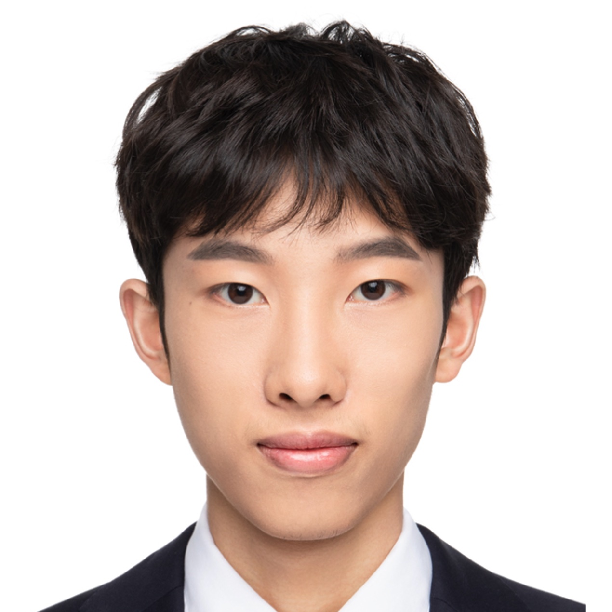
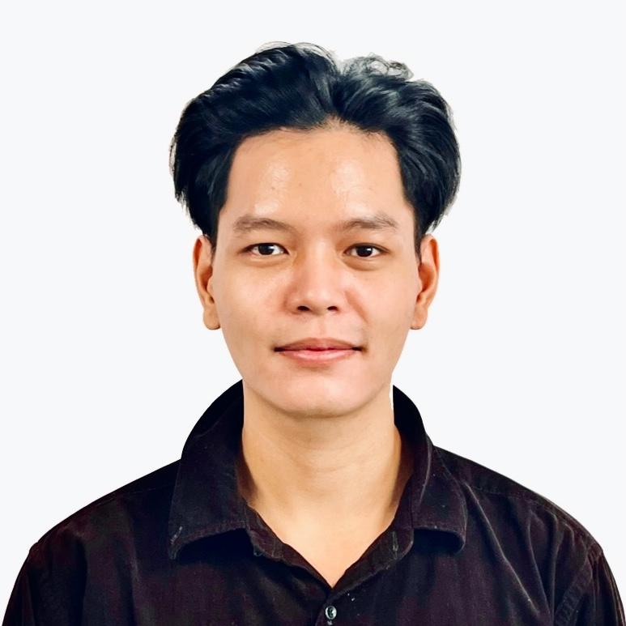
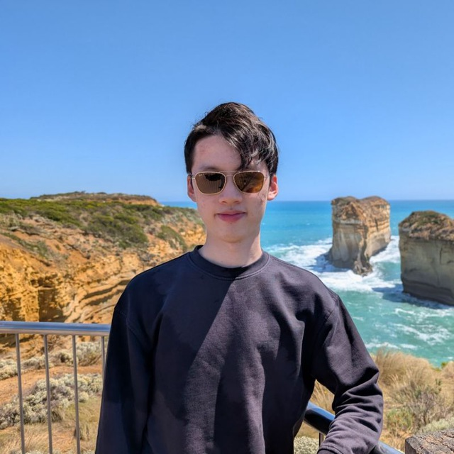
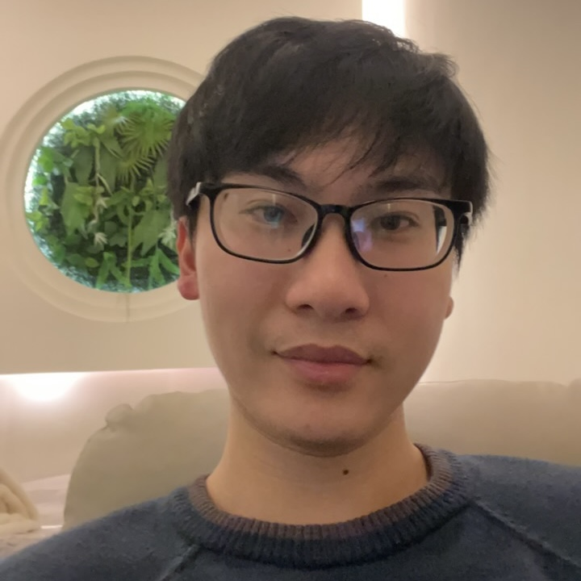
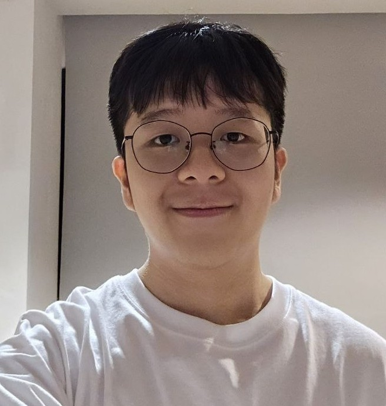
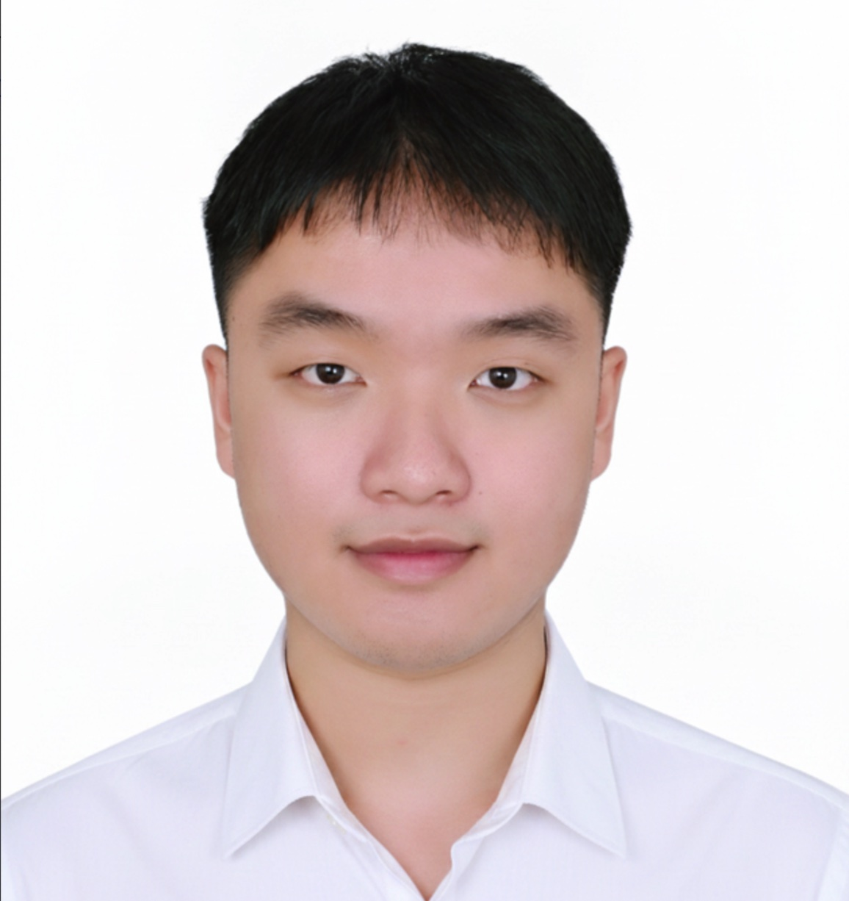
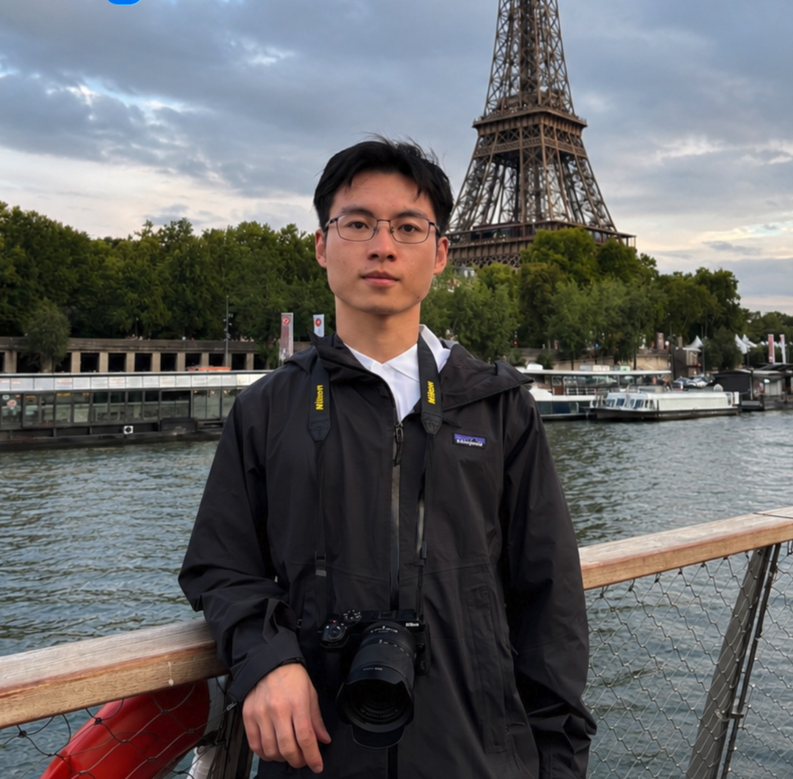
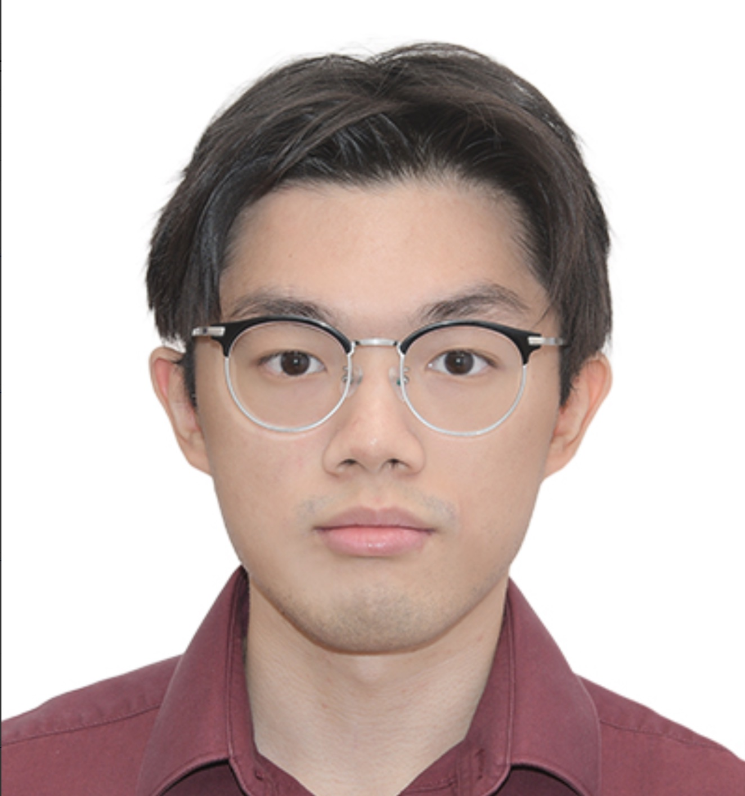

iNLP Lab
The inclusive NLP Lab (iNLP Lab) works on natural language processing, large language models, and LLM agents. The name is also the agenda: we care most about the human - languages, cultures and settings that today's systems serve worst, and about what happens to those systems once they act at the scale of a population. Our work runs from building stronger models, through understanding what those models actually learn, to the evaluation needed to tell the difference — see Research for what we are working on now.
Postdocs
Recruiting — see Openings.
PhD Students








Research Assistants

LLMs, Audio
Alumni
Students and interns I was fortunate to work with during my time in industry:
- Yihuai Hong: Undergraduate from SCUT → PhD student @ NYU
- Jiahao Ying: PhD candidate at Singapore Management University
- Ruochen Zhao: PhD at Nanyang Technological University → Apple
- Yiran Zhao: PhD at National University of Singapore → Salesforce
- Chang Gao: PhD at The Chinese University of Hong Kong → Alibaba Qwen
- Chaoqun Liu: PhD candidate at Nanyang Technological University
- Yue Deng: PhD at Nanyang Technological University → MiroMind